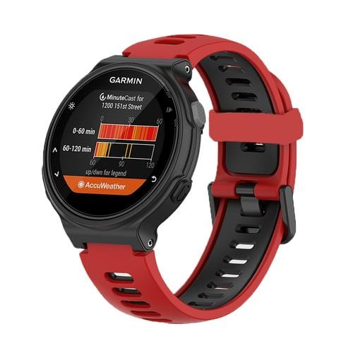

佳明 Forerunner 235

带光学心率的跑步经典，一代跑者的入坑之选。
客观评测
Forerunner 235 是佳明首批内置光学心率的跑步表之一，1.23 英寸半透反射屏阳光下可读性好。支持 GPS 与 GLONASS 双星定位，实测搜星约 10 秒，跑步轨迹在开阔路段基本无漂移。提供 VO2Max、训练效果、恢复建议等进阶指标，腕式心率在稳态有氧下误差约 ±5%。GPS+心率模式续航约 11 小时，日常佩戴约 9 天，50 米防水应对汗水雨水绰绰有余。
主观点评
235 是很多跑者的"第一块专业跑表"，橙色按键与呆萌表盘自带年代滤镜。戴上它跑步会不自觉想看配速与心率，训练变得有据可依。轻巧的机身长跑无感，通知推送虽简陋但够用。如今看屏幕分辨率与心率精度已被新机超越，但它开启的"数据化跑步"体验，至今仍被老用户念念不忘。
优点与不足
- 腕式心率加 GPS 一表搞定跑步训练
- 数据生态完善，训练指标专业
- 机身轻巧，长时间跑步无负担
- GPS 续航约 11 小时，长距离赛事吃紧
- 塑料感强，颜值平平
- 心率在高强度间歇时偶有延迟
参数规格
| 屏幕 | 1.23 英寸半透反射式 MIP 屏 |
|---|---|
| 传感器 | 光学心率传感器（Elevate）、加速度计 |
| 定位 | GPS / GLONASS |
| 防水 | 5ATM（50 米防水） |
| 电池/续航 | 智能模式约 9 天，GPS+心率约 11 小时 |
| 系统 | 佳明自有系统 |
| 兼容性 | iOS / Android |
| 功能 | 跑步动态、VO2Max、训练状态、智能通知 |
| 重量 | 约 42 克 |
| 表带 | 硅胶快拆表带 |